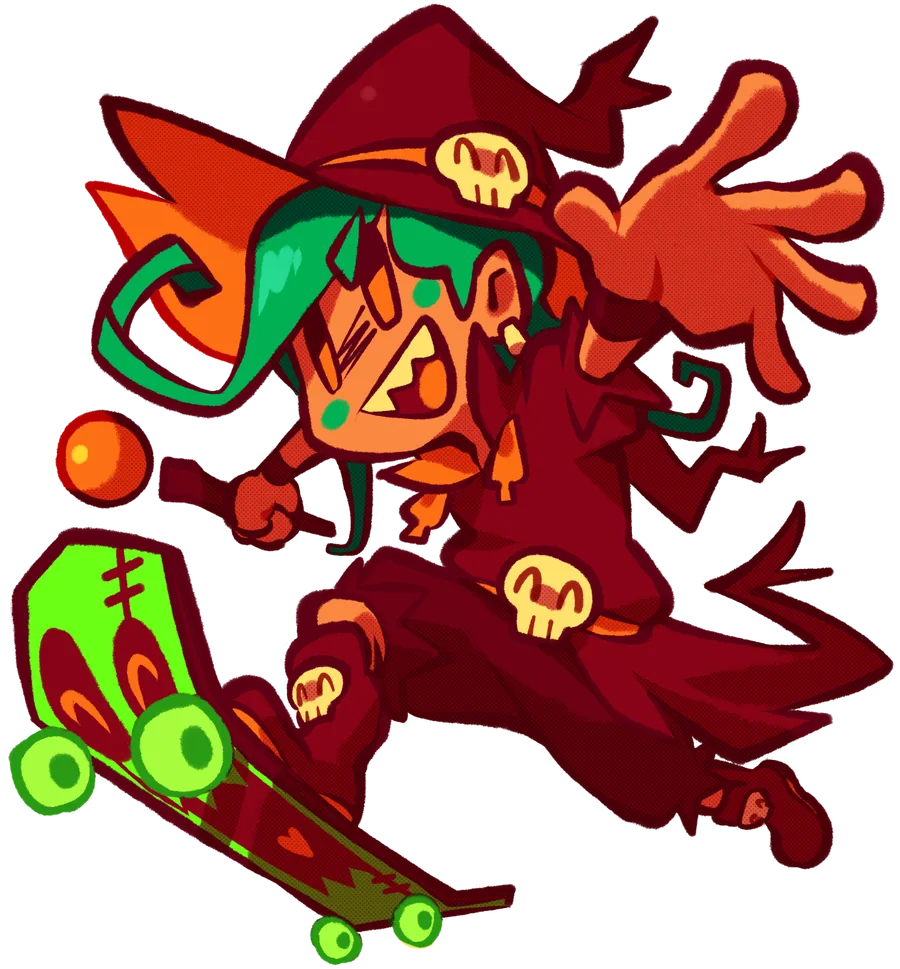
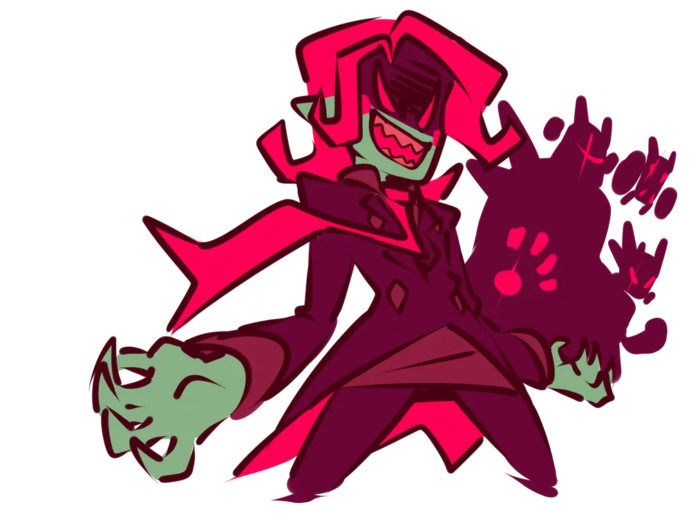
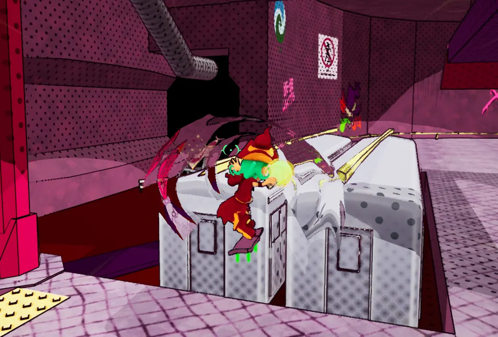
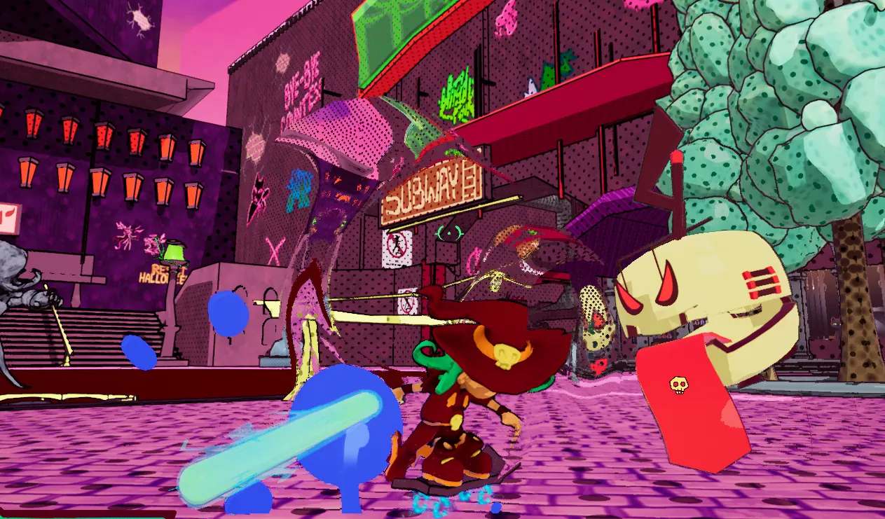
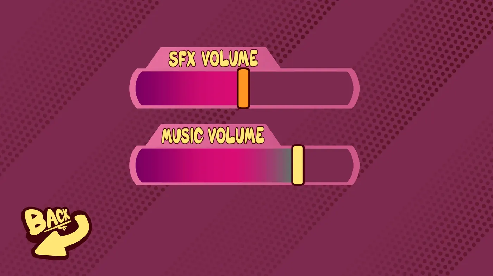
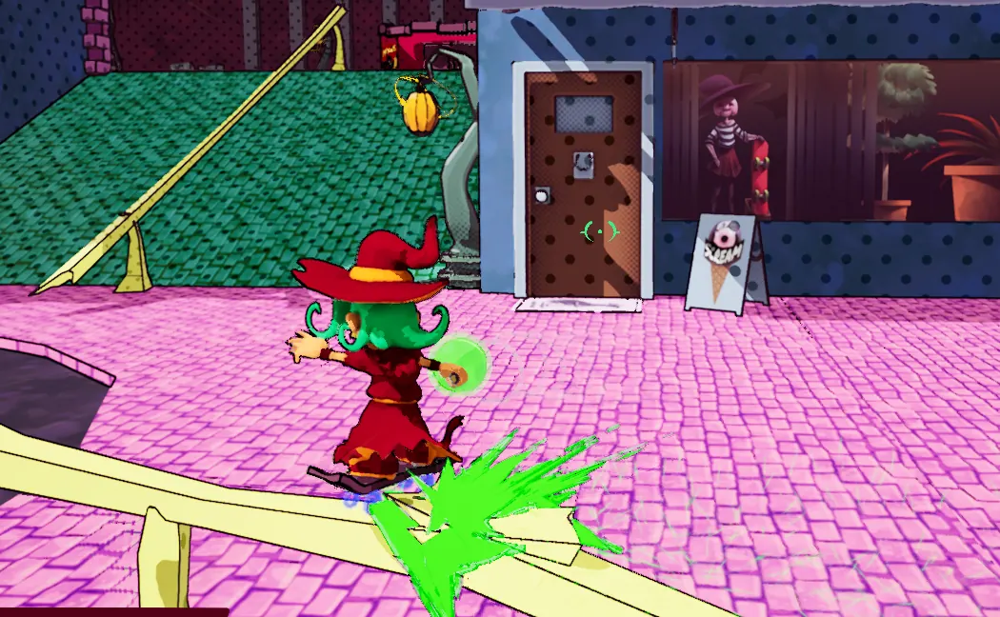
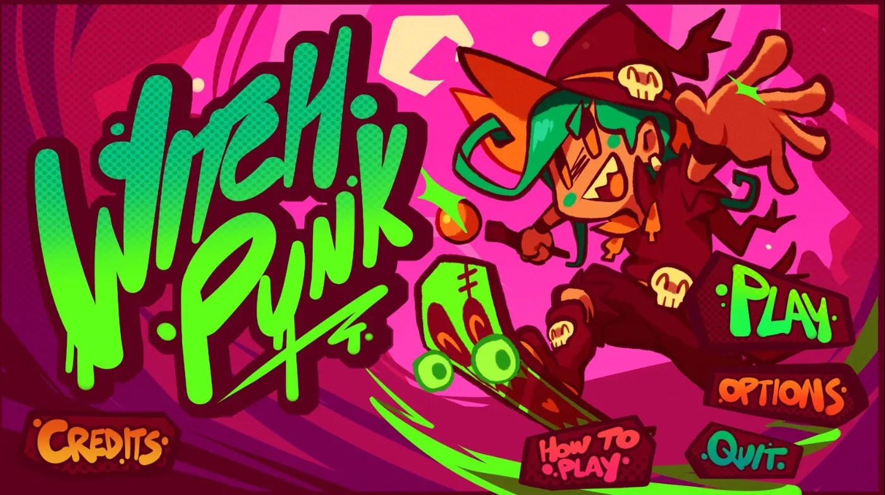
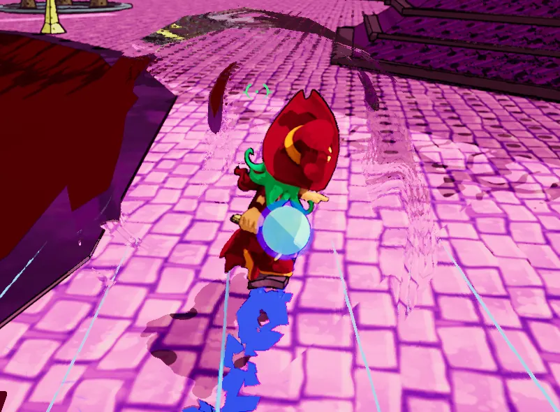
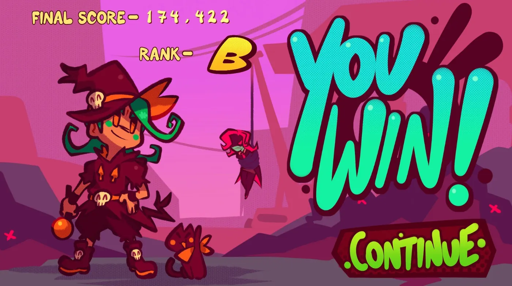
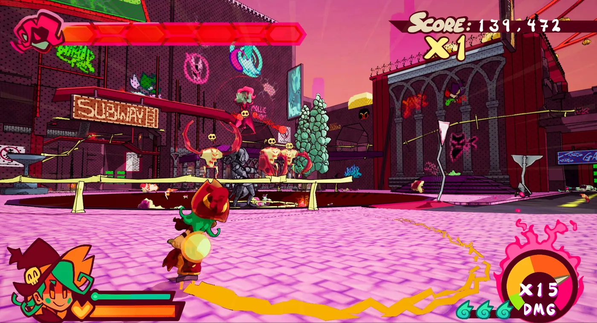

Game dev · Unreal Engine 4
Witchpunk
A non-stop third-person brawler built by 99% Funk at DigiPen Institute of Technology.

The game
Witchpunk is all about building speed to deliver devastating attacks. Play as Mollie, a skateboarding witch from the streets of Skelecom, and defeat the tyrants trying to take over Halloween.
It was made as a student project at DigiPen Institute of Technology.

My role
- Audio lead. I made sure every event in the game had sound and wrote the code to trigger it. I also wrote all of the music and many of the SFX.
- VFX programmer. I built custom effects in Niagara and brought the VFX artists' assets to life.
- Gameplay programmer. I built the first enemy AI with UE Behavior Trees and worked on the UI, including the audio settings menu and the splash sequence.
Screenshots
Scroll sideways to see more.







